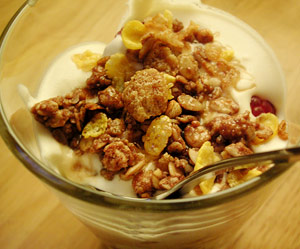

Himbeer-Crispy-Whisky-Trifle
5 von 63 dl rahm mit 4 esslöffel honig/melasse mischen weitere 4 esslöffel whisky beigeben. steif schlagen. jetzt schichten und zwar abwechselnd die mischung, dann die frischen himbeeren und zum schluss eine müsli-crispy-mischung. diese schichtung 2-3 mal wiederholen, glas mit folie abdecken. anschliessend mind. 30 min im kühlschrank abkühlen lassen und kühl servieren.
